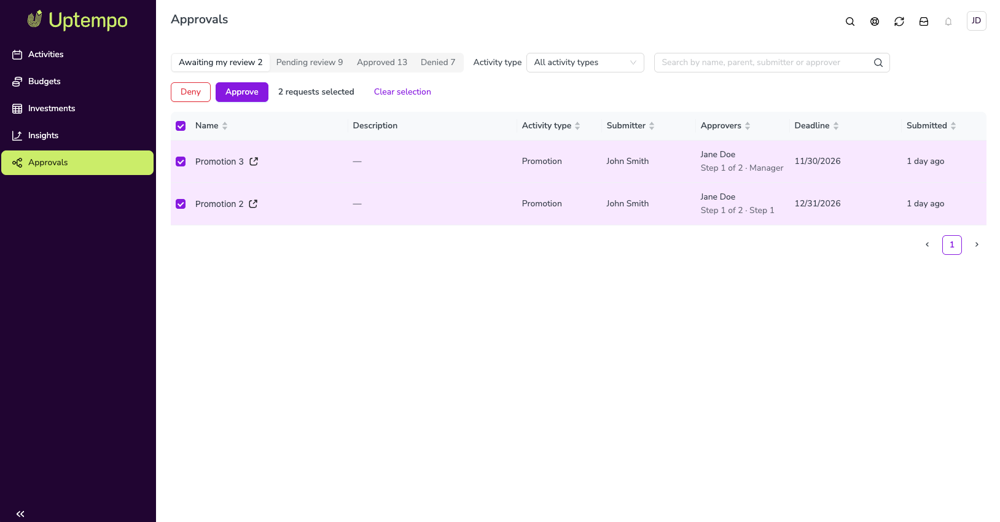
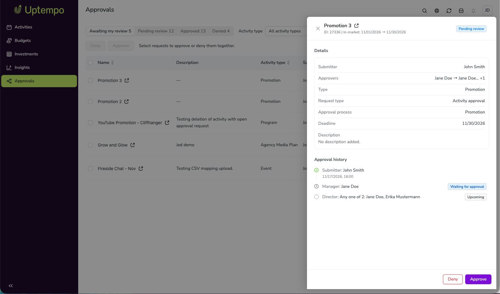

Review and decide on approval requests
The Approvals page lists the approval requests for activities you can view. As an approver, you can approve or deny requests on the Approvals page, or directly from an activity's details panel on the Timeline.
Before you begin
Activity approvals must be enabled in your Uptempo instance. This feature is in Preview; contact your Customer Success Manager to enable it.
To see a request, you need view access to the activity.
To approve or deny a request, you must be an approver for its current step, the default approver for a reassigned step, or an admin.
How the Approvals page works
Open the Approvals page
Open the Approvals page in either of these ways:
Click Approvals in the navigation menu.
Click the link in an approval email. The link opens the request on the Approvals page.
Tabs
Requests are organized into tabs. Each tab shows a count of its requests.
- Awaiting my review
Pending requests waiting at a step where you're an approver. A request appears here only while it's at your step. Requests are sorted by soonest deadline.
- Pending review
All pending requests for activities you can view, including requests waiting at other steps or with other approvers.
- Approved
Requests that have been approved.
- Denied
Requests that have been denied.


Columns
Each request shows the following columns:
Name: The activity name.
Description: The description entered at submission, which starts with the activity's own description. Long descriptions are shortened; open the request to read the full text.
Activity type: The activity's type, which decides the approval process the request follows. Use the Activity type filter to show requests for one type.
Submitter: The user who submitted the request. The submitter may not be the activity's owner.
Approvers: The approvers for the request's current step, with the step's position in the route and its name, for example Step 1 of 2 · Manager. A step without a name shows its number instead, for example Step 1 of 2 · Step 1.
Deadline: The approval deadline set by the submitter. Requests that are overdue, or due within 7 days, are flagged.
Submitted: When the request was submitted.
Search
Use the search field to find requests by activity name, submitter, activity owner, approver, or parent activity.
Request details
Click any request to open its details, which show:
The submitter, the activity owner, and the approvers for each step
The deadline, its urgency, and the request status
The approval process and the description
The Approval history: each step in the route, in order, with its status. Decided steps show who decided, when, and any comment. The current step shows Waiting for approval, and later steps show Upcoming. A step sent to the default approver shows why it was reassigned.


Click Open in Activities to view the activity on the Timeline.
Decisions and comments
A comment is required when you deny a request, and optional when you approve. Comments are saved on the approval request and shown in its history.
You decide only the request's current step. When you approve, the request moves to the next step, and that step's approvers are emailed. When you approve the final step, the request is Approved. When you deny, the request is Denied, and later steps aren't started.
When a step has several approvers, the first one to decide settles that step. The other approvers on the step see that it has been decided, and by whom.
If you're an approver on more than one step, you decide each time the request reaches one of your steps.
An admin can approve or deny the current step of any pending request. The decision counts for that step only.
Decisions are final and can't be undone. Each decision is recorded in the approval history and the audit trail.
Approve or deny requests
You can decide on one request at a time on the Approvals page or from the Timeline, or on several requests at once on the Approvals page. You decide only each request's current step.
On the Approvals page
On the Approvals page, click the Awaiting my review tab.
Click the request to open its details. Review the description and history.
Optional: Click Open in Activities to review the activity itself.
Click Approve or Deny.
Enter a comment:
Approve: Optional.
Deny: Required. Explain what the submitter needs to change.
Confirm your decision.
Your decision and comment are recorded in the approval history. If you approved and the request has another step, it moves to that step and stays on the Pending review tab. Otherwise, it moves to the Approved or Denied tab.
From the Timeline
In the
 Activities section, click the activity to open its details panel.
Activities section, click the activity to open its details panel.Review the activity and its pending approval request.
Click Approve or Deny.
Enter a comment:
Approve: Optional.
Deny: Required. Explain what the submitter needs to change.
Confirm your decision.
Your decision and comment are recorded in the approval history. If you approved and the request has another step, it moves to that step. Otherwise, it moves to the Approved or Denied tab on the Approvals page.
Several requests at once
On the Awaiting my review tab, you can decide on several requests in one action. Each request keeps its own decision and comment in its approval history.
Approving in bulk decides only your current step on each request. Requests at their final step become Approved; the others move to their next step.
Denying in bulk denies each selected request.
If another approver decides one of the selected requests before your action runs, that request is skipped, and Uptempo reports it in the results.
On the Approvals page, click the Awaiting my review tab.
Select the requests you want to decide on. To select every request on the current page (up to 25), select the checkbox in the header row. The number of selected requests is shown next to Approve; click Clear selection to start over.
Click Approve or Deny.
Enter a comment. The same comment is applied to every selected request.
Approve: Optional.
Deny: Required.
Confirm your decision.
Uptempo shows a summary of the results, including any requests that were skipped.